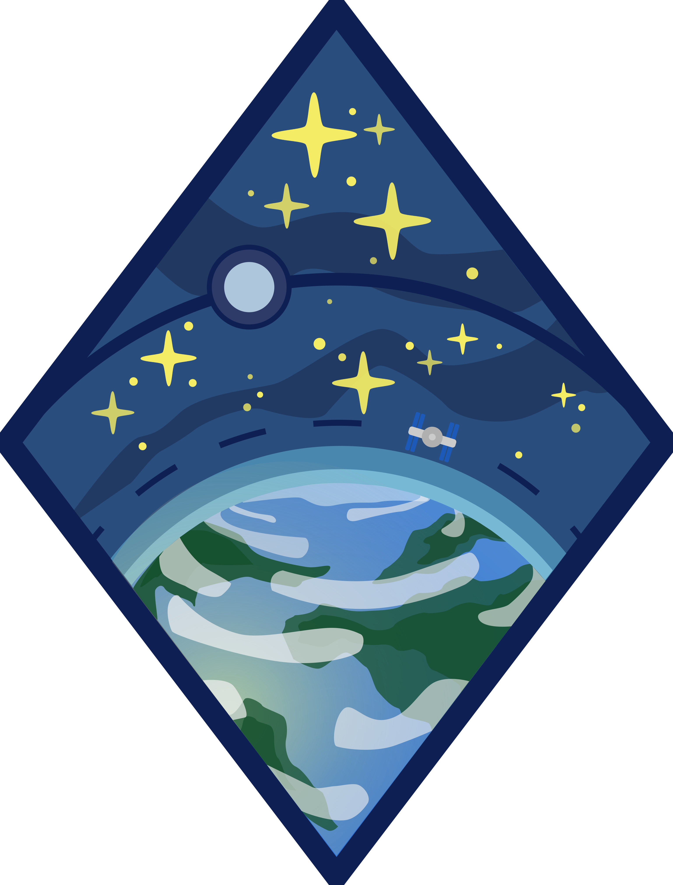
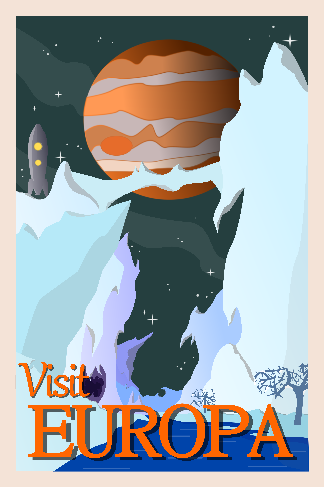
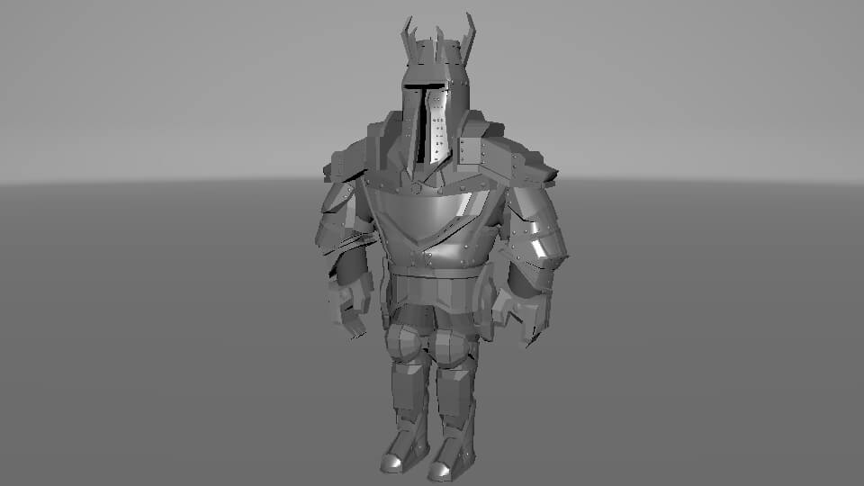
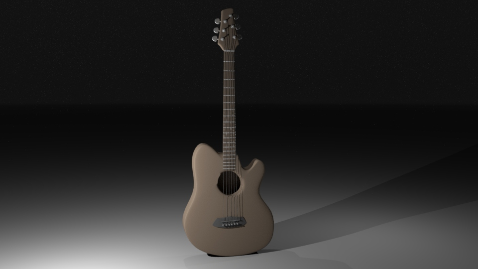
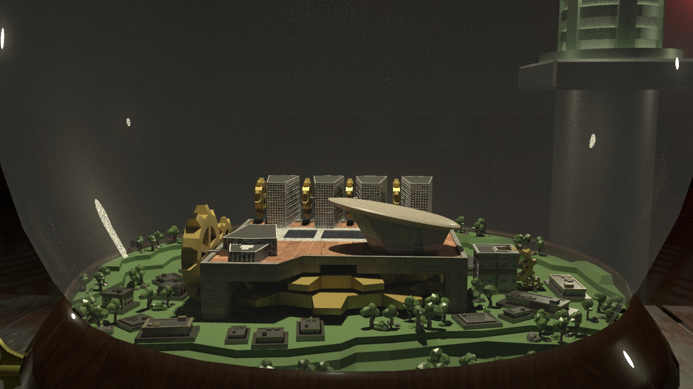

Graphic Art Portfolio
I have hobbiest experience with vector graphics as well as 3D modeling, utilizing tools such as Inkscape and Maya. This is a collection of some of my work.

Portrait of my dog, Kalden. Rest in peace buddy. Created in Inkscape.

Logo of Earth I made during Earth Day, in Inkscape.

Forest valley scene, inspired by the game Firewatch. Created in Inkscape.

Travel poster for the moon Europa. Created in Inkscape.

Knight character concept for the Intro Modeling and Motion class. Created in Maya, using hand written references and simple rigging from HumanIK.

Simple guitar model I created for a room design project in Intro Modeling and Motion. It was my introduction to using curves to create objects (the guitar strings). Created in Maya.

Still frame of my final project for the Intro Modeling and Motion class, rendered using Arnold in Maya. I created a toy snow globe of some important locations from my home city of Albany, NY. As the animation progressed, the globe is wound up and the pieces grow into their full size. It was inspired by the Game of Thrones opening scene. Full Video